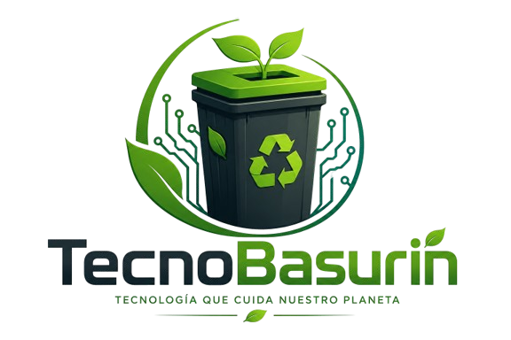

El Futuro del Reciclaje Tecnológico
Automatizá la separación y gestión de residuos electrónicos con nuestro contenedor inteligente de última generación.

Automatizá la separación y gestión de residuos electrónicos con nuestro contenedor inteligente de última generación.

Tecnología Arduino al servicio del medio ambiente
Microcontrolador que gestiona la clasificación automática de residuos en tiempo real.
Detectan el tipo y peso de cada dispositivo para dirigirlo al compartimiento correcto.
Fabricado con materiales reciclados y pensado para minimizar su huella ambiental.
Sistema de cierre hermético para prevenir contaminación y contacto con sustancias tóxicas.
Notifica cuando el contenedor está lleno para una recolección eficiente y a tiempo.
Diseñado para comunidades educativas e instituciones que quieran contribuir al medioambiente.
🟢 Clasifica automáticamente cables, pilas, controles y más
🟢 Genera conciencia ambiental en la comunidad
🟢 Reduce el riesgo de contaminación por residuos tóxicos
🟢 Facilita la tarea de reciclaje sin esfuerzo adicional
Reciclamos una amplia gama de equipos electrónicos, incluyendo computadoras, impresoras, monitores, baterías, escáneres, teléfonos celulares, cargadores, placas de módem, entre otros.
Los materiales pasan por un proceso de clasificación y separación. Componentes valiosos como el cobre, aluminio y plásticos seleccionados se reinsertan en la cadena productiva, reduciendo drásticamente el impacto ambiental.
Sí, recibimos equipamiento tanto de particulares como de instituciones educativas o empresas que buscan dar de baja sus activos de forma segura y responsable.
Podés coordinar un retiro completando el formulario en nuestra pestaña de Contacto o comunicándote directamente a nuestras líneas comerciales fijadas en el footer.
Para usuarios particulares y proyectos académicos institucionales el servicio es completamente gratuito. Consultar tarifas especiales vigentes para retiros corporativos masivos.
Sí, emitimos un comprobante de recepción y el correspondiente certificado de tratamiento de residuos electrónicos que avala que el hardware fue procesado bajo normativas ambientales vigentes.
Ofrecemos consultorías de eficiencia energética aplicadas a la gestión de IT, destrucción segura de almacenamiento de datos de discos duros y talleres de concientización en software sustentable.
No los tires a la basura. Reciclalos de forma responsable y contribuí a un futuro más verde y sostenible.
Comenzar a Reciclar →